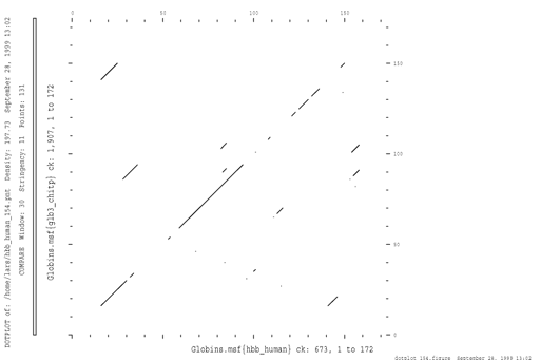

Lecture notes 19 Jan 2001 Per Kraulis
Early in the days of protein and gene sequence analysis, it was discovered that the sequences from related proteins or genes were similar, in the sense that one could align the sequences so that many corresponding residues match. This discovery was very important, since strong similarity between two genes is a strong argument for their homology. Bioinformatics is based on it.
A note on terminology: Homology means that two (or more) sequences have a common ancestor. This is a statement about evolutionary history. Similarity simply means that two sequences are similar, by some criterion. It does not refer to any historical process, just to a comparison of the sequences by some method. It is a logically weaker statement. However, in bioinformatics these two terms are often confused and used interchangeably. The reason is probably that significant similarity is such a strong argument for homology.
Here is an example of a sequence alignment for two proteins (the protein kinase KRAF_HUMAN and the uncharacterized O22558 from Arabidopsis thaliana, from SWISSPROT) using the BLAST program.
546 AA
Score = 185 bits (464), Expect = 1e-45
Identities = 107/283 (37%), Positives = 172/283 (59%), Gaps = 15/283 (5%)
Query: 337 DSSYYWEIEASEVMLSTRIGSGSFGTVYKGKWHG-DVAVKILKVVDPTPEQFQAFRNEVA 395
D + WEI+ +++ + ++ SGS+G +++G + +VA+K LK E + F EV
Sbjct: 274 DGTDEWEIDVTQLKIEKKVASGSYGDLHRGTYCSQEVAIKFLKPDRVNNEMLREFSQEVF 333
Query: 396 VLRKTRHVNILLFMGYMTKD-NLAIVTQWCEGSSLYKHLHVQETKFQMFQLIDIARQTAQ 454
++RK RH N++ F+G T+ L IVT++ S+Y LH Q+ F++ L+ +A A+
Sbjct: 334 IMRKVRHKNVVQFLGACTRSPTLCIVTEFMARGSIYDFLHKQKCAFKLQTLLKVALDVAK 393
Query: 455 GMDYLHAKNIIHRDMKSNNIFLHEGLTVKIGDFGLATVKSRWSGSQQVEQPTGSVLWMAP 514
GM YLH NIIHRD+K+ N+ + E VK+ DFG+A V+ SG E TG+ WMAP
Sbjct: 394 GMSYLHQNNIIHRDLKTANLLMDEHGLVKVADFGVARVQIE-SGVMTAE--TGTYRWMAP 450
Query: 515 EVIRMQDNNPFSFQSDVYSYGIVLYELMTGELPYSHINNRDQIIFMVGRGYASPDLSKLY 574
EVI ++ P++ ++DV+SY IVL+EL+TG++PY+ + + +V +G P + K
Sbjct: 451 EVI---EHKPYNHKADVFSYAIVLWELLTGDIPYAFLTPLQAAVGVVQKG-LRPKIPK-- 504
Query: 575 KNCPKAMKRLVADCVKKVKEERPLFPQILSSIELLQHSLPKIN 617
K PK +K L+ C + E+RPLF +I IE+LQ + ++N
Sbjct: 505 KTHPK-VKGLLERCWHQDPEQRPLFEEI---IEMLQQIMKEVN 543
The basis for comparison of proteins and genes using the similarity of their sequences is that the the proteins or genes are related by evolution; they have a common ancestor. Random mutations in the sequences accumulate over time, so that proteins or genes that have a common ancestor far back in time are not as similar as proteins or genes that diverged from each other more recently. Analysis of evolutionary relationships between protein or gene sequences depends critically on sequence alignments.
There are many features of sequence alignments that give interesting information. For example, a closer analysis of the alignment can reveal which parts of the sequences that are likely to be important for the function, if the proteins are involved in similar processes. In parts of the sequence of a protein which are not very critical for its function, the random mutations can accumulate more easily. In parts of the sequence that are critical for the function of the protein, hardly any mutations will be accepted; nearly all changes in such regions will destroy the function.
Sequence alignment has become an essential part of biological science. There are now many different techniques and implementations of methods to perform alignment of sequences.
The dotplot is a simple, graphical way of displaying sequence similarity. One can use it to easily spot segments of good sequence similarity. The two sequences are placed on each side of 2-dimensional matrix, and each cell in the matrix is then filled with a value for how well a short window of the sequences match at that point.
This dotplot shows the hemoglobin A chain from human compared to erythrocruorin from Chironomus (insect).